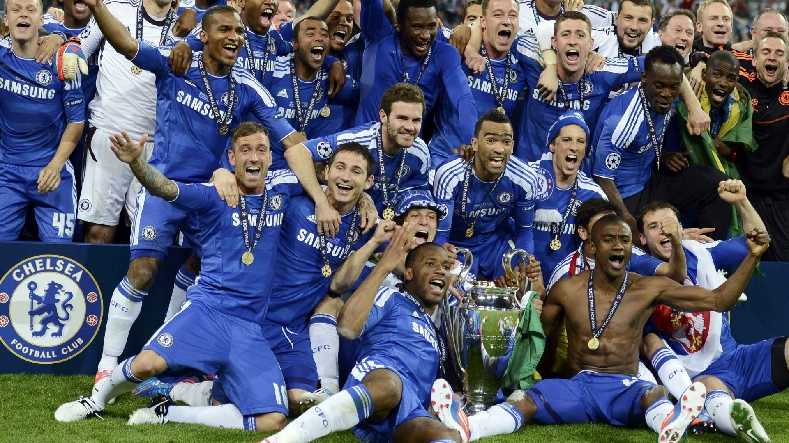
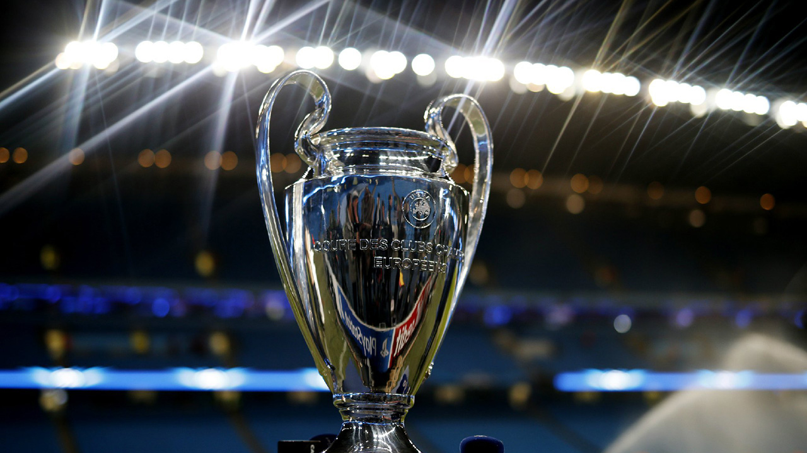
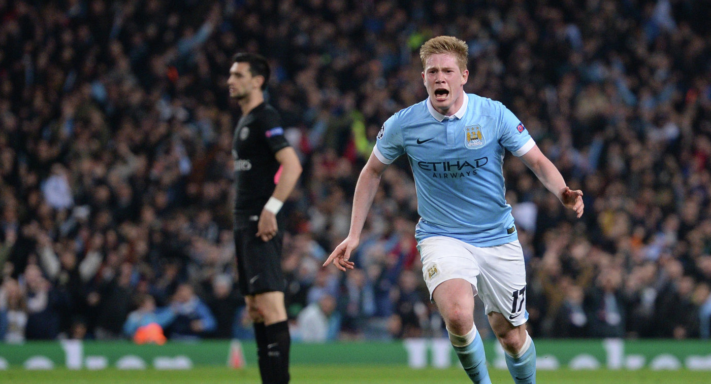
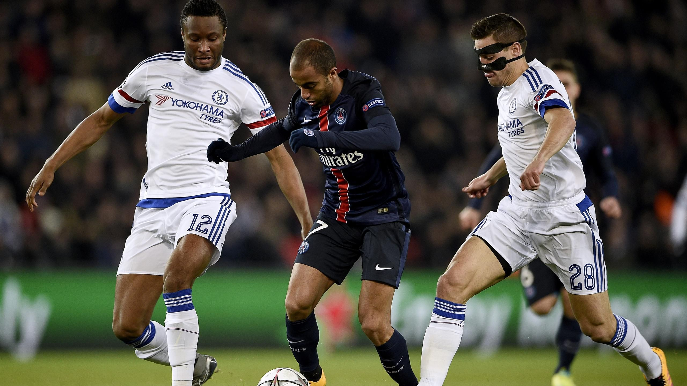

Для английских клубов это самая больная тема. Чемпионства ни в Лиге Чемпионов, ни в Лиге Европы не было уже три года.
Еврокубки каждый год дают удобный способ с легкостью побить козыри оппонента. АПЛ тут самая легкая жертва. Во-первых, потому что английская лига очень многих раздражает – богатством, дикими зарплатами и трансферами, гламурностью, глобальной популярностью, иногда приобретающей странные формы, а заодно простоватой манерой игры – ну или стереотипными об этом представлениями. А во-вторых, потому что все это в последние годы плохо сочетается с результатами английских клубов в еврокубках.
Англии сейчас действительно сложно отбиваться: с тех пор, как «Челси» в 2012-м неожиданно выиграл ЛЧ, в двух из трех сезонов ни один клуб АПЛ не попадал в четвертьфинал, а в третьем все закончилось поражением того же «Челси» в полуфинале от «Атлетико». Новый сезон англичане тоже начали своеобразно, проиграв 3 из 4 матчей в стартовом туре. Ну и в Лиге Европы дела еще скромнее – ровно с того момента, как все тот же «Челси» в 2013-м выиграл этот турнир с Бенитесом.

Давайте попробуем выдвинуть несколько простых идей о том, почему так происходит.
1. АПЛ, безусловно, самая богатая футбольная лига мира, но доходы тут, как все знают, распределяются между ее клубами гораздо более равномерно, чем в других чемпионатах. Это приводит к тому, что английские середняки и аутсайдеры часто могут тратить на трансферы и зарплаты больше некоторых итальянских или немецких грандов или участников ЛЧ, а клубы из чемпионшипа, бывает, отдают в аренду своих игроков «Милану» или «Интеру». Но это с одной стороны. А с другой такая ситуация приводит к тому, что английские гранды по доходам уступают грандам из Испании и гранду из Германии, где доходы распределяются неравномерно и сосредотачиваются у клубов с самой верхушки.

2. Об отсутствии зимней паузы в чемпионате и о диком рождественско-новогоднем периоде как о причине неудач английской сборной и английских клубов в еврокубках говорят с прошлого века. Это реальная сложность: в самой середине сезона, когда игрокам нужен небольшой отдых и перезарядка, АПЛ выстреливает сумасшедшей предельно изматывающей серией туров с интервалом в несколько дней.
Еще и аргумент с уровнем сопротивления вполне реален. Вряд ли кто-то будет сильно спорить с тем, что английским лидерам сложнее играть с небедными отлично укомплектованными командами из середины и конца турнирной таблицы АПЛ, чем испанским или итальянским грандам с некоторыми нищими клубами из своих лиг. Тут много оговорок и нюансов, но в целом ситуация именно такая.
